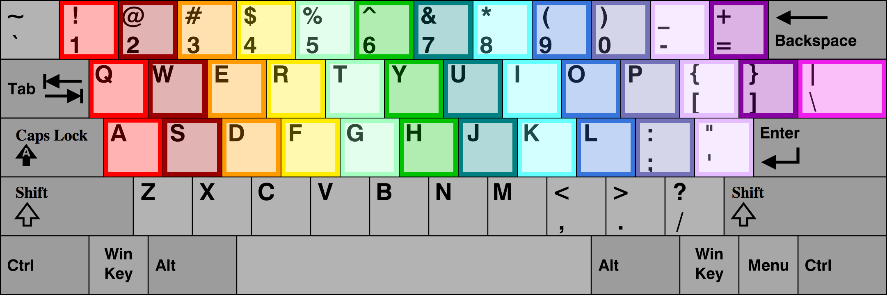

Loading audio file 1/74..
Current octave: 2 octaves below middle C
Variation from Equal Temperament: 0c
Press this key to toggle octaves
By following the 7 easy directions below, you'll quickly starting playing a special harpsichord whose 31 keys in each of its octaves allowed it to have very natural sounding thirds in any of the 12 chromatic keys:
This webpage is an interactive, open source research project conducted by Martin Connor at Brandeis University (M.F.A. in Music, 2018) and Duke University (B.A. in Music, 2012.) It digitally models the microtonality and extended quarter-comma meantone temperament of the medieval arcicembalo keyboard, which was originally formulated by Nicola Vincentino in 1555. The arcicembalo was notable for its 31 equal divisions of the octave, which enabled performance in just intonation in all 12 keys.
Until July 2018, this remarkable instrument was completely inaccessible to the public, due to the arcicembalo's disappearance from the records of the time shortly thereafter (only a single 31 ET keyboard survives from the Renaissance; it is located at the International Museum and Library of Music in Bologna, Italy.)
For a deeper explanation of how the arcicembalo contributed to understandings of the just noticeable difference in human perceptions of frequency, as well as alternative constructions of familiar intonations, readers are encouraged to read "Instruments of Music Theory" (Rehding, 2017,) available at Music Theory Online here.
(The author would like to contribute a special word of thanks to Dr. Alexander Rehding and Dr. Karen Desmond, for their encouragement and guidance in this project; and Mr. Taylor Calderone, for his implementation of the website.) Lastly, all readers are invited and encouraged to download the original Logic Pro EXS24 Digital Arcicembalo instrument for installation on their own computer by clicking the appropriate menu button at the top of this page. Please enjoy!
Alves, Bill. “The Just Intonation System of Nicola Vicentino.” Harvey Mudd College, Journal of the Just Intonation Network, Apr. 1989, pages.hmc.edu/alves/vicentino.html.
Berger, Karol. Theories of Chromatic and Enharmonic Music in Late 16th Century Italy. UMI Research Press, 1980.
Kaufmann, Henry W. “More on the Tuning of the ‘arcicembalo.’” Journal of the American Musicological Society, vol. 23, no. 1, 1970, pp. 84–94., doi:10.2307/830349.
Kaufmann, Henry W., and Robert L. Kendrick. “Vicentino, Nicola.” Oxford Music Online, 2001, doi:10.1093/gmo/9781561592630.article.29293.
Rehding, Alexander. “Instruments of Music Theory.” Music Theory Online, vol. 22, no. 4, July 2016, doi:10.30535/mto.22.4.4.
Vicentino, Nicola, et al. Ancient Music Adapted to Modern Practice. Yale University Press, 1996.
Interest in exotic and alternative tuning systems is one defining feature of the contemporary musical world. Such examples abound, whether in the works and new instruments of Harry Partch, the experimental playing styles of guitarists like Glenn Branca, Lou Reed, and Sonic Youth, the harmonic theories of Guggenheim fellow Michael Harrison, or books like How Equal Temperament Ruined Harmony (Duffin, 2008.) Coming after centuries of hegemonic dominance by equal temperament, much of this renewed interest is driven by the ease with which inexpensive musical software and technology makes previously inaccessible or difficult tuning systems seem simple, and even flexible. One such software program is Logic Pro's EXS24, which allows for immediate and non-destructive shifts of an audio file's pitch, in increments of both cents (going up to half of a semitone) and larger semitones (going up to 4 entire octaves.) Programs like Logic Pro's EXS24 can thus be used by even non-specialists to instantaneously change the tuning mechanisms of any common instrument in ways that are not only unexpected or creative, but physically impossible.
In addition to the flourishing of alternative intonations in modern music, this technological development has also allowed for the recovery of special instruments whose existence the natural ravages of passing time had brought to an early end (or, at the very least, heavily threatened. One such instrument is Nicola Vicentino's arcicembalo and its 31-ET tuning system, whose 31-key octaves allowed for the use of pure thirds in all 12-keys. Those unique intonational acrobatics are finally manifested once again in the arcicembalo's digital reincarnation on this website (for more information on the arcicembalo specifically, please see this page's "Background" section.)
The first step in digitizing the medieval arcicembalo was to treat audio samples from an equal-tempered acoustic harpsichord audio samples in the Apple DAW (digital audio workstation) called Logic Pro, using the software instrument EXS24. The EXS24 specializes in modeling acoustic instruments, due to its programmable and super fine control over musical parameters like envelope, dynamic level, panning, and pitch. Over the course of several months in late 2016, audio samples from this equal-tempered acoustic harpsichord were transposed and pitch-shifted using special VST plug-ins until they matched the tunings of the arcicembalo's keys.
With the actual sonic material created, the networked mapping of those audio files to a MIDI controller keyboard could be planned out. Two main solutions were implemented to maintain playability and ease of use: one based on differing amounts of a player's level of touch pressure, and one based on the horizontal flattening of the arcicembalo's divided keys and vertical stacking of manuals. Since most MIDI keyboards do not have overlapping manuals or 2-pitch keys, like the arcicembalo did, stronger and weaker levels of touch were used to contrast a single note's frequency, instead of its dynamic level. This solution preserve the digital model's faithfulness to the original, since the mechanics of harpsichords like the arcicembalo do not generally allow for dynamic contrast in performance.
The second solution was to flatten the arcicembalo's vertical layout of manuals into adjacent keyboard octaves. That is, the extra keys that allow the arcicembalo to play in extended quarter-comma meantone temperament are found in neighboring higher (or lower) octaves, and not on a different manual altogether. Specifically, the keys that are found in the two octaves below middle C—starting at C2 and ending at C4 in Roland notation, wherein C4 equals middle C—both play notes in the C2 octave. Meanwhile, the keys that are found in the two octaves of middle C and above—starting at C4 and ending at C6 in Roland notation—actually play the notes that are in the much lower C3-to-C4 octave.
This layout can be observed in full below:

The 2 octaves on the left play all the 31-ET versions of the notes that appear in the octave that's 2 octaves below middle C, while the 2 octaves on the right play all the 31-ET versions of the notes in the octave directly below middle C. Thus, the vertical layout of the arcicembalo's manuals are instead flattened and made horizontal.
While these solutions inhibited the digital arcicembalo's overall range and registral contrast, they also preserved the instrument's general playability very well. After a successful private demonstration for scholars in this area in February 2017, it was decided to publicly present this work to a larger audience through the creation of a website.
The shift from a piano's manipulation of the arcicembalo sound to a computer keyboard's manipulation of the arcicembalo sound demanded another reorganization of this instrument's layout. Now, the second highest row of the keyboard, beginning with the letters, Q, W, and E, is treated as the foundation of this final organization. This first row of letters on the keyboard makes the perfect "home row," because it is the only row that contains the exact number of keypads needed to represent every note in a full octave: 13. Thus, each of these 13 letters has been mapped to the chromatic arcicembalo pitch that most closely approximates a perfectly accurate equal temperament tuning.
The keypad "Q" will play an equal-tempered C; the keypad "E" will play an equal-tempered D that is lowered by 7 cents; the keypad "T" will play an equal-tempered E that is lowered by 8 cents; and so on. Please consult the diagram below for full information:
| Figures for variation in cents, two octaves below middle C: | |||||||||||||
|---|---|---|---|---|---|---|---|---|---|---|---|---|---|
| Note | C | C# | D | D# | E | F | F# | G | G# | A | A# | B | C |
| Top key | 1 | 2 | 3 | 4 | 5 | 6 | 7 | 8 | 9 | 0 | - | = | |
| Difference in cents | -41 | -42 | +34 | -49 | +27 | +44 | -39 | +37 | -46 | +30 | +47 | +23 | |
| Middle key | Q | W | E | R | T | Y | U | I | O | P | [ | ] | \ |
| Difference in cents | 0 | +17 | -2 | +10 | -8 | +3 | +20 | +2 | +13 | -5 | +6 | -18 | 0 |
| Lower key | A | S | D | F | G | H | J | K | L | ; | ' | ||
| Difference in cents | -42 | -24 | -7 | -31 | -14 | -38 | -24 | -4 | -28 | -11 | -35 | ||
The diatonic notes in C vary from a perfect ET by 8 cents at most (all except for B, which is off by 18 cents). The chromatic notes have much more variation in them; the A# is too flat by -35 cents, which is an inaccuracy of nearly half a semitone. To be perfectly clear, the keypad [C] on the traditional QWERTY keyboard will not play a C note; the keypad [E] will not play a E note; and so on (except for one coincidence on the [D] keypad!) Consequently, the scholarly focus in this iteration of the digital arcicembalo has been slightly shifted from strict historicity to pedagogy, usability, and entertainment. Concurrently, the digital arcicembalo's minute microtonal variations and expressive timbral shadings will likely overshadow the original arcicembalo's careful modulation through all 12 keys in just intonation, although such possibilities have been carefully preserved here.
That subtle but crucial shift in the playing styles that are readily available for this digital arcicembalo is outweighed by the many virtues of such a thorough reorganization. First, a higher or lower shift in frequency for the same note's pitch can now be easily reflected in the shift from the home row on the QWERTY line to either a higher typographical row (the numerical row) or a lower typographical row (the ASDFGHJKL row.) For example, the keypad [Q] plays a C note that does not vary at all in its pitch, when compared to equal-tempered C. However, the keypad [1] directly above the home keypad [Q] will play a C whose pitch is 41 cents above an ET C, while the keypad [A] that is directly below the home keypad [Q] will play a C whose pitch is 42 cents below an ET C. Second, the prominence of equal temperament in this digital arcicembalo's layout makes it appropriately cognizant of the intervening centuries of musical history that have happened since its disappearance, after which point equal temperament became the de facto tuning system for keyboard music. Third, an arcicembalo with equal temperament at its fore will be much more responsive to the needs and desires of the professional and amateur musicians who are most likely to encounter this new arcicembalo today.
All of this complexity has been divided up into much more digestible morsels. The budding arcicembalo player can sort all of the digital arcicembalo's keys into 10 full "trios" of notes, and 2 incomplete "duos" that are missing 1 or 2 pitches from their full complement. From highest frequency to lowest frequency, they are as follows:
The following picture reflects this:
The backbone of 11 note "trios" and 2 incomplete "duos" that organize the digital arcicembalo's 3 keyboard rows into a more digestible C major chromatic scale.
With this re-release of the arcicembalo, it is hoped that other instruments that have been lost to history, such as Henry Cowell's rhythmicon, can likewise be digitally recovered and technologically resurrected.
Martin Connor
M.F.A. in Musicology
Brandeis University